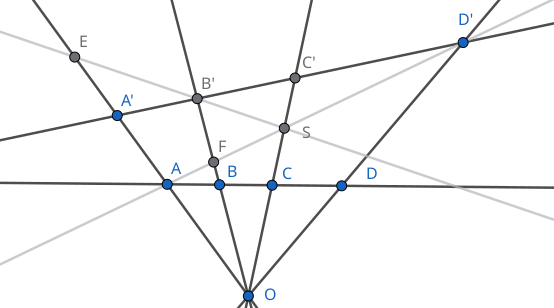
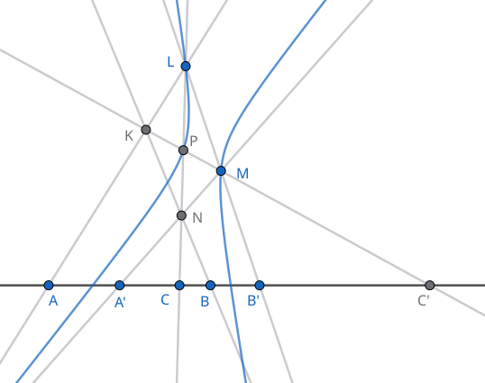
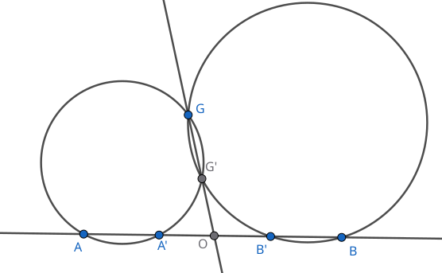
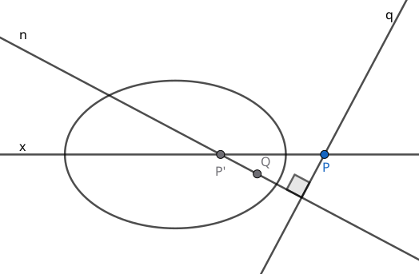
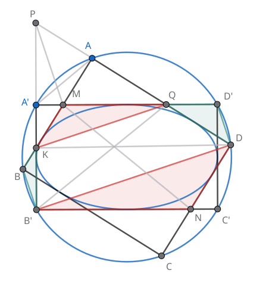
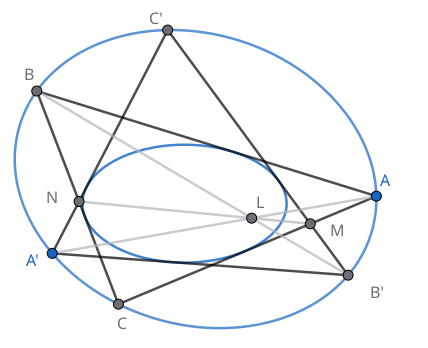

[Lehmer D.《An elementary course in synthetic projective geometry》]
共轭直径 根据共轭直线的定义, 两条直径相互共轭, 是指其中一条通过另一条的极点 (一个无穷远点). 两条共轭直径与无穷远直线共同组成自配极三角形. 我们有: 圆锥曲线的弦被直径平分 `iff` 这条弦与共轭直径平行 `iff` 这条弦与直径端点处的切线平行
共轭方向 共轭直径的方向称为圆锥曲线的一对共轭方向. 事实上只要两条共轭直线中有一条为直径, 它们的方向就是共轭方向. 最后, 如果两条共轭直线都不是直径, 则它们的方向未必是共轭方向.
例如 `P` 是平面上任一点, `O` 是圆锥曲线中心, 则 `OP` 与 `P` 的极线 `p` 共轭. 注意 `OP` 的极点是 `P` 的极线 `p` 与 `O` 的极线 (无穷远直线) 的交点 `oo_p`. 现在将 `p` 平移到 `O` 处, 成为直径 `p'`, 它仍经过 `oo_p` 点, 因此 `OP` 与 `p'` 是共轭直径.
对于有心圆锥曲线, 我们可以通过切线或被平分的弦找到给定直径的唯一共轭直径. 对于抛物线的任一有限远处的直径 `l`, 尽管它的共轭直径在无穷远处, 我们仍可以用同样的方向找到 `l` 的共轭方向. 此时共轭方向随 `l` 的不同选取而不同, 这是因为无穷远直线没有良定义的方向: 必要时它可以和任意直线平行.
抛物线极线的性质 过抛物线外一点 `P` 作两切线, 切点为 `A, B`, 则 `AB` 是 `P` 的极线. 过 `P` 作一条直径 (平行于 `x` 轴), 则它通过 `AB` 中点 `M`. 又设 `PM` 交抛物线于 `N`, 则 `P, M, N, oo_(PM)` 为四调和点, 故 `N` 是 `PM` 中点.
圆锥曲线的方程 利用共轭直径推导圆锥曲线的方程.
极线的度量定义 [百度百科] 给定二次曲线 `c` 和平面上任一点 `P`, 过 `P` 的动直线 `l` 与 `c` 交于 `M, N` 两点. 当 `l` 绕 `P` 转动时, `P` 点关于 `M, N` 的调和共轭点 `Q` 的轨迹为一直线 `p`, 称为 `P` 的极线. `P` 点称为直线 `p` 的极点. 特别当 `P` 在曲线上时, 规定它的极线为 `P` 处的切线.
用齐次坐标证明 `Q` 的轨迹为直线.
设 `P = (p_1, p_2, p_3)^(sf T)`, `Q = (q_1, q_2, q_3)^(sf T)`,
则 `l_(P Q)` 上任意一点坐标为 `Q + k P` (`k = oo` 时, `Q + k P = P`).
将 `Q + k P` 代入 `c` 的方程 `x^(sf T) A x = 0`
(`x in RR^3`, `A` 是三阶实对称矩阵) 得
`(Q + k P)^(sf T) A (Q + k P) = 0`,
`k^2 P^(sf T) A P + 2 k (P^(sf T) A Q) + Q^(sf T) A Q = 0`.
设 `M = Q + m P`, `N = Q + n P`. 则 `m, n` 是上面关于 `k` 的二次方程的两根.
由于 `PQ, MN` 调和共轭, 有
`-1 = (PQ, MN) = (PM//MQ)/(PN//NQ)`
`= ((m-oo)//(0-m))/((n-oo)//(0-n))`
`= n / m`.
于是 `m + n = 0`, 由韦达定理有 `P^(sf T) A Q = 0`, 即 `Q` 的轨迹是直线.
称直线到自身的射影对应 `f` 为对合 (involution), 如果 `f @ f = "id"`, 即 `f = f^-1`. 对合映射下的对应点又叫对合点, 满足 `f(A) = A'`, `f(A') = A`, 记作 `A harr A'`.
对合的判定 如果直线到自身的射影对应 `f` 有一组对合点, 则所有的对应点都是对合点, 即 `f` 是直线到自身的对合.

假设 `f` 将直线上的 `A, B, C` 分别映为 `D, C, B`, 则 `B harr C` 是一组对合点, `f` 由这三组对应点完全确定. 下证 `f(D) = A`. 从交比来看, 显然 `(AB, CD) = (DC, BA)`, 因此结论成立. 也可以用射影方法证明如下: `(A, B, C, D)` `overset O to` `(A', B', C', D')` `overset S to` `(A', E, O, A)` `overset (B') to` `(D', S, F, A)` `overset O to` `(D, C, B, A)`. 这构造出了一个射影对应, 将 `A, B, C, D` 映为 `D, C, B, A`, 因此这个对应就是 `f`, 且 `f(D) = A`.在四调和点一节, 我们曾经研究完全四边形与直线有四个交点的特殊情形. 本节我们要研究六个交点的一般情形.
完全四边形确定的对合
设平面上完全四边形 `KLMN` 的三组对边
`KL, MN, KN, LM, LN, KM` 与一直线 `l` 分别交于 `A, A', B, B', C, C'` 六点.
固定前四点, 则 `C'` 的位置完全由 `C` 点决定, 而与完全四边形的形状无关.

假设另有一个完全四边形 `K'L'M'N'` (未画出) 的对应边也经过 `A, A', B, B', C` 五点, 下证 `K'M'` 经过 `C'`. 对三角形 `KLN` 和 `K'L'N'` 应用 Desargues 定理, 它们的三边交点 `A, B, C` 共线, 所以对应点连线 `K K', L L', N N'` 共点. 再对三角形 `LMN` 和 `L'M'N'` 作同样讨论, 得到 `L L', M M', N N'` 共点. 因此, `K K', L L', M M'` 三线共点. 对三角形 `KLM` 与 `K'L'M'` 应用 Desargues 逆定理, 得到它们三边的交点 `A, B', KM nn K'M'` 共线. 因此 `K'M'` 也经过 `C'`.
对合点的作法 如上图, 设 `f` 是直线 `l` 到自身的对合, `A harr A'`, `B harr B'` 是两组对合点. 对任意 `C in l`, 可以这样得到对合点 `C'`: 从前四点中任取三点, 例如取 `A, A', B'`, 分别过它们作三直线 `a, a', b'`, 得到两交点 `L = a nn b'`, `M = a' nn b'`. 固定 `L, M` 两点, 作 `N = CL nn A'M`, `K = BN nn AL`, 于是 `C' = KM nn l`.
建立直线 `l` 到自身的射影对应 `g`: `C overset L mapsto N` `overset B mapsto K` `overset M mapsto C'`. 从图形容易看出 `C, C'` 的地位是对称的, 因此 `C overset g harr C'`, 又因为完全四边形的三组对边地位对称, 我们还有 `A overset g harr A'`, `B overset g harr B'`. 因此 `f = g`, `C overset f harr C'`.
圆锥曲线的共轭点确定的对合 任给直线 `l` 到自身的对合, 则存在唯一的圆锥曲线 `c`, 使得任意一组对合点 `B, B'` 关于 `c` 共轭. 换言之, `B, B'` 分别落在对方的极线上. 反之给定圆锥曲线 `c` 和直线 `l`, 只要它们不相切, 直线 `l` 到自身的对合也完全确定.
图形同上, 先根据给定的对合构造完全四边形,
然后将固定两点 `L, M` 视为线束中心, 记 `LC nn MC' = P`, 则 `P` 的轨迹是圆锥曲线.
考虑线束中心连线 `LM`, 它对应着 `L, M` 两点处的切线, 于是
`LB'` 的对应直线 `MB` 是 `M` 处的切线, `MB'` 的对应直线 `LB` 是 `L` 处的切线.
这推出 `LM` 是 `B` 的极线, 它正好通过 `B'` 点,
因此 `B, B'` 是一对共轭点.
反之给定一条圆锥曲线 `c` 和直线 `l`,
如果它们不相切, 任取 `l` 上关于 `c` 的两对共轭点 `A, A', B, B'`.
根据极点极线的结论, 共轭点之间的对应是射影对应,
因此这四点完全确定了直线 `l` 到自身的对合.
如果圆锥曲线与直线相切, 直线上的所有点都与切点共轭, 从而不是双射, 无法确定直线上的对合.
直线到自身的对合只能有 0 或 2 个不动点. 当它有两个不动点时, 这两点调和分割任一组对合点.
根据直线上的对合与圆锥曲线的关系, 对合的不动点就是直线与圆锥曲线的交点, 由于直线不能与圆锥曲线相切, 交点只能有 0 或 2 个. 当有两个交点 `S, S'` 时, 任一组对合点 (即关于圆锥曲线的共轭点) 都与 `S, S'` 调和共轭.
Desargues 对合定理 通过平面上四点的圆锥曲线族, 与平面上任一直线相交形成对合点列.
对偶地, 可以定义线束的对合为线束到自身的射影对应 `f`, 且 `f @ f = "id"`.
给定圆锥曲线 `c` 和不在曲线上的一点 `S`, 则 `c` 唯一确定了线束 `S` 到自身的对合:
那就是将直线映为共轭直线.
这个对合下的不动直线就是 `S` 到 `c` 的两条切线 (如果存在).
对合是射影性质, 因此在射影对应下, 对合的点列仍被映为对合线束或点列.
还可以定义二阶点列的对合, 有如下结论:
如果圆锥曲线上叠加了两个射影相关的二阶点列, 且对应 `f` 为对合映射, 则称它们是两个对合二阶点列. 对合二阶点列的对应点连线通过固定点 `U`. 任取对应点 `A harr A'` 和 `B harr B'`, 则连线 `AB` 和 `A'B'` 的交点在 `u` 的极线上.
取 `A, A'` 为两个线束中心, 则公共边 `A A'` 是对应直线, 两线束处于透视位置. 因此对应直线交点 `P = AB' nn A'B`, `Q = AB nn A'B'` 都落在透视轴 `u` 上. 下证 `A A'` 通过 `u` 的极点 `U`, 只需证 `A A'` 的极点 `R` 在 `u` 上. 作 `A, A'` 处的切线交于点 `R`, 对内接四边形 `A B' A' B` 应用 Pascal 定理知 `P, Q, R` 三点共线, 因此 `R in u`.
考虑直线到自身的对合, 我们称无穷远点的对合点为对合的中心. 如果对合存在不动点 `S, S'`, 则中心与无穷远点调和分割线段 `S S'`, 因此中心就是 `S S'` 的中点.
对合的度量定义 称直线 `l` 到自身的映射是对合, 如果存在一点 `O in l`, 使得任一组对应点 `A harr A'` 有 `OA * OA' =` 非零常数. 点 `O` 就称为对合的中心.
取两组对合点 `A harr A'`, `B harr B'`, 先用完全四边形构造出对合的中心: 具体做法是固定 `L, M` 两点, 过 `M` 作 `KM || l` 交 `AL` 于 `K`, 然后 `N = BK nn A'M`, `P = LN nn MK`, `O = LN nn l`. 由平行线立即得到相似三角形 `LKP ~ LAO`, `NMP ~ NA'O`, 因此 `(OA)/(PK) = (OL)/(PL)`, `quad (OA')/(PM) = (ON)/(PN)`. 类似 `(OB')/(PM) = (OL)/(PL)`, `quad (OB)/(PK) = (ON)/(PN)`. 于是 `OA * OA' = OB * OB'`.
对合点的作法 (通过作圆)
任给直线 `l` 上两组对合点 `A harr A'`, `B harr B'`,
通过 `A, A'` 和直线外任一点 `G` 作一圆, 再通过 `B, B', G` 三点作一圆, 两圆相交于 `G'` 两点.
作 `O = G G' nn l`. 根据圆幂定理
`OA * OA'`
`= OG * OG'`
`= OB * OB'`,
因此 `O` 就是对合中心.
对任意 `C in l`, 过 `G, G', C` 三点作圆, 交直线 `l` 于另一点 `C'`, 则 `C harr C'`.
最后, 如果 `G, G'` 在直线 `l` 同侧, 可以过这两点作两个圆与直线 `l` 相切, 得到对合的两个不动点.

圆是特殊的圆锥曲线, 在复射影空间中, 它与无穷远直线有两个虚交点, 再加上 `G, G'`, 正是通过四点的圆锥曲线系, 因此这个作图法是 Desargues 对合定理的特例.

排除掉圆的情形, 有心圆锥曲线是轴对称图形, 且中心点不是焦点, 因此它至少有两个焦点 (如果存在).焦点的光学性质 从一个焦点出发的光线经曲线反射后必经过另一个焦点. 对于抛物线, 从有限远焦点出发的光线反射后成为平行于直径的直线. 人们制作抛物面反射镜, 用于汇聚太阳光, 也可以反过来使手电筒产生平行光.
设圆锥曲线的焦点为 `F, F'`. 在曲线上任取一点 `P`, 设 `P` 点的切线 `t` 与法线 `n` 分别与直线 `F F'` 交于 `T, N`. 参考焦点存在性定理的证明, `t, n` 互为共轭法线, `T, N` 是一组对合点, 关于不动点 `F, F'` 调和共轭. 根据四调和点的性质, 当 `/_TPN` 为直角时, `PN` 是 `FPF'` 的角平分线, 因而 `PF'` 可以看成 `FP` 的反射光线.
焦点的极线称为准线 (directrix), 它垂直于焦点所在的轴. 如果记垂足为 `G`, 则 `FG` 被圆锥曲线调和分割, 割点恰好是两个顶点. 对于抛物线, 其中一个顶点是无穷远点, 因此另一个顶点 `A` 是 `FG` 的中点, 即 `AF = AG`. 对于椭圆 `AF lt AG`, 双曲线则相反, `AF gt AG`.
| 类型 | 圆 | 椭圆 | 抛物线 | 双曲线 |
|---|---|---|---|---|
| 离心率 `e` | `0` | `[0, 1)` | `1` | `(1, oo)` |
圆锥曲线的第一定义 (到两个焦点距离的和/差) 椭圆的两焦点在准线之间, 故椭圆上一点到两焦点的距离之和, 等于两准线的距离 `xx e`, 这是个常数. 类似地, 双曲线上一点到两焦点距离之差也等于两准线的距离 `xx e`, 是个常数. 根据这点到哪个焦点更近, 双曲线分为两个分支.

[知乎@刘金堂] 讨论椭圆 `x^2/a^2 + y^2/b^2 = 1` 的外切矩形面积的最值.
椭圆的外切矩形 `ABCD` 四个顶点都在半径为 `sqrt(a^2+b^2)` 的蒙日圆上. 设矩形边长分别为 `2m, 2n`, 则 `m^2+n^2 = a^2+b^2`. 由均值不等式知道, 当矩形成为正方形时, 面积取得最大值 `4mn le 2(m^2+n^2)` `= 2(a^2+b^2)`. 当 `m//n` 最大时, 矩形的边与椭圆的轴平行, `m = a`, `n = b`, 面积取得最小值 `4ab`.
Poncelet 闭合定理 [百度百科] 设存在一个 `n` 边形外切于一条圆锥曲线 `c_1`, 内接于另一条圆锥曲线 `c_2`. 则 `c_1, c_2` 之间存在无数个这样的 `n` 边形. 具体来说, 从 `c_2` 上任一点出发, 向 `c_1` 作切线, 并取切线与 `c_2` 的交点. 重复这个步骤, 最终折线一定能在出发点闭合, 并形成一个外切于 `c_1`, 内接于 `c_2` 的 `n` 边形.

事实上, 对 `c_2` 上的六点 `A'ACB B'C'` 应用 Pascal 定理知,
`L = A A' nn B B'`,
`M = AC nn B'C'`,
`N = BC nn A'C'`
三点共线.
再对六边形 `ABNA'B'M` 应用 Brianchon 逆定理知 `B'C'` 是 `c_1` 的切线.
`n = 4` 的情形. 设四边形 `ABCD` 外切于 `c_1`, 内接于 `c_2`. 将 `ABCD` 射影为平行四边形, 根据对称性, `c_2` 的中心被射影到平行四边形的中心. 再将 `c_2` 仿射为圆, 此时平行四边形成为矩形. 根据 Monge 圆的结论, `c_2` 上任一点 `A'` 到 `c_1` 的两切线必垂直, 从而以 `A'` 出发所作的折线一定能在 `A'` 闭合. 最后将图形变换回去得证.